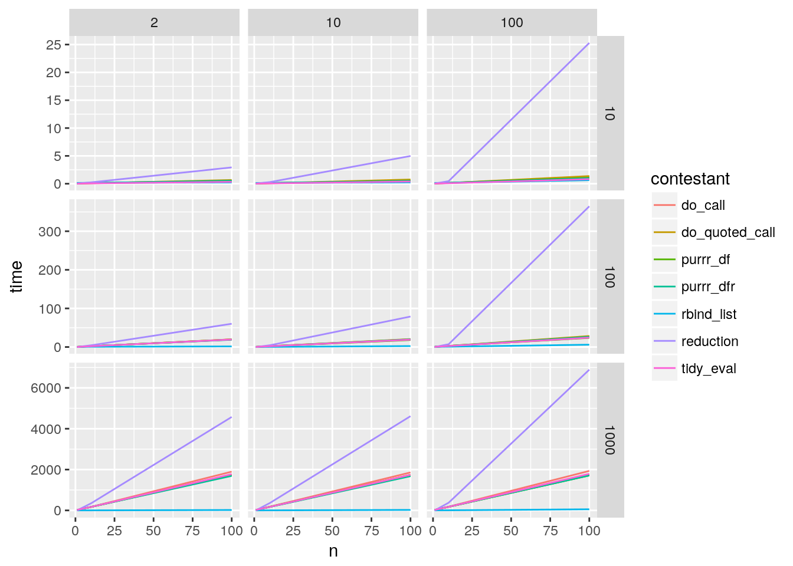
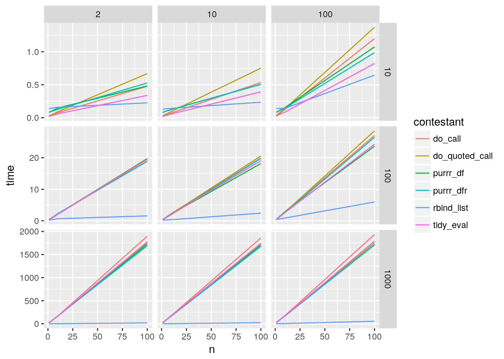
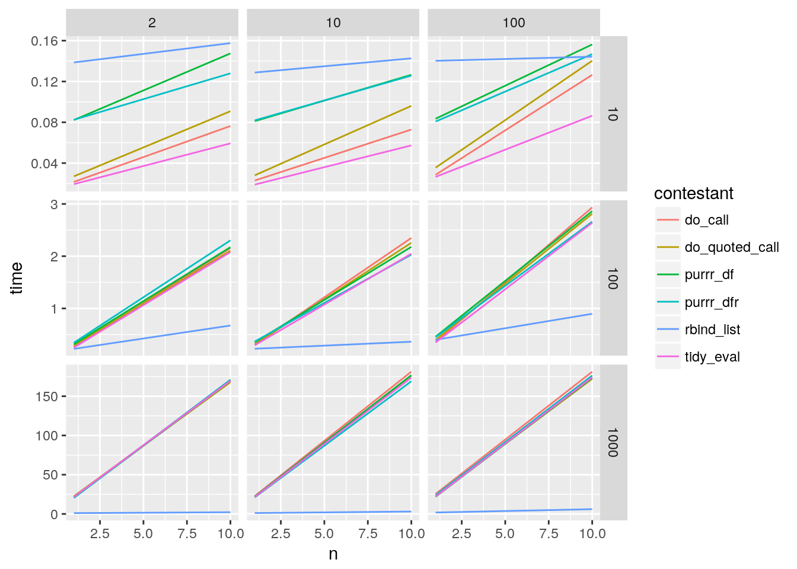
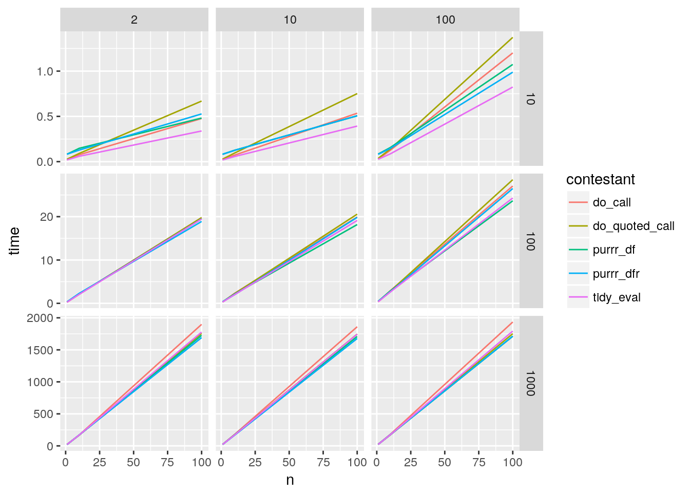

While writing my recent blog post on monoids I claimed to have written a fast mconcat for data.frames. In this context mconcat means row_binding a list of data.frames. The simple implementation looks like:
reduce(frames, bind_rows)Now this implementation will be quick, no doubt, but I claimed that this was faster:
bind_rows(!!!frames)And then I thought about it, and I’m not too sure, maybe the cost of unquoting outweighs the multiple trips to c++. There are also other ways you can think to bind up data.frames. So I decided to have a little shootout.
Here are the contenders:
suppressPackageStartupMessages({
library(dplyr)
library(purrr)
library(furrr)
library(tidyr)
library(data.table)
library(ggplot2)
library(microbenchmark)
})
contestants <-
list(reduction = function(xs) reduce(xs, bind_rows)
, tidy_eval = function(xs) bind_rows(!!!xs)
, do_call = function(xs) do.call(bind_rows, xs)
, do_quoted_call = function(xs) do.call(bind_rows, xs, quote = TRUE)
, purrr_df = function(xs) map_df(xs, identity)
, purrr_dfr = function(xs) map_dfr(xs, identity)
, rbind_list = function(xs) as.data.frame(rbindlist(xs, fill = TRUE))
)In the mix we have the two I mentioned above, two variants of do.call, and two sneaky options of using purrr::map_* of the identity function withdata.frame reductions built in. And finally data.table’s rbindlist with a coerce back to data.frame at the end.
We’ll vary the contest by three dimensions, number of rows and columns per data.frame, and the number of data.frames.
random_df_list <- function(rows, cols, n, ...){
replicate(n, {
rnorm(rows * cols) %>%
matrix(ncol = cols) %>%
as.data.frame()
}, simplify = FALSE)
}Let’s do a quick test to make sure all the contestants give the same answer:
random_data <- random_df_list(10,10,10)
bound_results <- map(contestants, ~ .(random_data))
all(map_lgl(bound_results, ~ identical(., bound_results[[1]])))## [1] TRUEOk, great they do. So let’s run them through the battery. The grid will be:
We’ll generate our experiment grid:
set.seed(20180726)
experiment_grid <-
crossing(rows = c(2,10,100)
, cols = c(10,100,1000)
, n = c(1,10,100)
, iteration = 1:10) %>%
mutate(test_data = pmap(., random_df_list)) We’ll try each with 10 random data sets for each parameter combination. This take a little while to run so I’ll parallelize out to four cores with furrr (< 1h after parallelizing). We’ll use microbenchmark to try 10 replicates of each contender on each data set.
plan("multicore")
options(mc.cores = 4)
results <-
future_pmap_dfr(experiment_grid, function(test_data, ...){
imap_dfc(contestants, function(contestant, nm){
microbenchmark(contestant(test_data)
, times = 10
, unit = "ms") %>%
summary %>%
{ data_frame(!!nm := .[1,"median"]) }
})
})Now we’ll tack the results on to the experiment grid and see what the results look like. The median of medians for each contender will be displayed across parameter combinations.
full_results <-
experiment_grid %>%
select(-test_data) %>% #for space
bind_cols(results) %>%
gather(contestant, time, !!!names(contestants)) %>%
group_by(cols, rows, n, contestant) %>%
summarize(time = median(time))
full_results %>%
ggplot(aes(x = n, y = time, colour = contestant)) +
geom_line() +
facet_grid(cols ~ rows, scales = "free_y")
A bit suprising to me, the reduce with bind_rows is dramatically slower than the other contestants, and rbindlist is dramatically faster. I’m quite surprised do.call in either form is as performant as the the other solutions. I was under the impression from Hadley’s exploration of do.call that it would be quite slow.
Let’s remove the reduction because it’s really throwing off the scale. Evidentally passing the R/C++ interface multiple times prevents a lot of potential optimizations in the C++ code.
full_results %>%
filter(contestant != "reduction") %>%
ggplot(aes(x = n, y = time, colour = contestant)) +
geom_line() +
facet_grid(cols ~ rows, scales = "free_y") 
My guess is that in most cases people are binding <= 20 data frames together so let’s zoom in on those
full_results %>%
filter(contestant != "reduction") %>%
filter(n <= 20) %>%
ggplot(aes(x = n, y = time, colour = contestant)) +
geom_line() +
facet_grid(cols ~ rows, scales = "free_y") 
Unless you’re binding very small frames together rbindlist is the best. Now amongst the approaches that use bind_rows:
full_results %>%
filter(! contestant %in% c("reduction", "rbind_list")) %>%
ggplot(aes(x = n, y = time, colour = contestant)) +
geom_line() +
facet_grid(cols ~ rows, scales = "free_y") 
Amongst these solutions, the tidy evaluation approach is fastest at small sample frame sizes. When you have many large frames, using purrr’s data.frame returning maps are marginally faster than the other approaches but you’re looking at a handful of percent. You can see some issues with unquoted do.call start showing up at 1000 row data.frames.
rbindlistOne concern I had before suggesting everyone use rbindlist is whether or not it deals nicely with list columns.
a <- data_frame(a = list(1))
b <- data_frame(b = list(2))
as.data.frame(rbindlist(list(a,b), fill = TRUE))## a b
## 1 1 NULL
## 2 NULL 2So there is an undesirable behaviour here, rbindlist is unlisting our simple list columns. Even worse the fill value has changed from NA to NULL. Let’s look at a more complicated list example:
a <- data_frame(a = list(c = list(1), d = "hi"))
b <- data_frame(b = list(c = list(2), d = "there"))
as.data.frame(rbindlist(list(a,b), fill = TRUE))## a b
## 1 1 NULL
## 2 hi NULL
## 3 NULL 2
## 4 NULL thereOh no, list columns are being recursively unlisted.
So rbindlist is unsuitable for use with list columns. And since list columns are very important to me rbindlist is not a suitable general purpose row binder. Now you could probably get good mileage out of traversing all of the data.frames checking for list columns and using rbindlist if there aren’t any.
In fact this is probably on average still the fastest approach, even with the cost of the traversal.
Switching from reduce to bind_rows(!!!xs) as I did in my monoids post did indeed provide a performance benefit, however the tidy evaluation approach is not the fastest way to bind data.frames by row. If you’re certain you have no list columns, then rbindlist cannot be beat, being substantially faster and scaling better than the tidyverse alternatives. If list columns are a common part of your workflow, as they are mine, then using purrr’s data.frame reducing maps (map_df or map_dfr) are probably the fastest, but the tidy evaluation approach above is probably more than close enough.